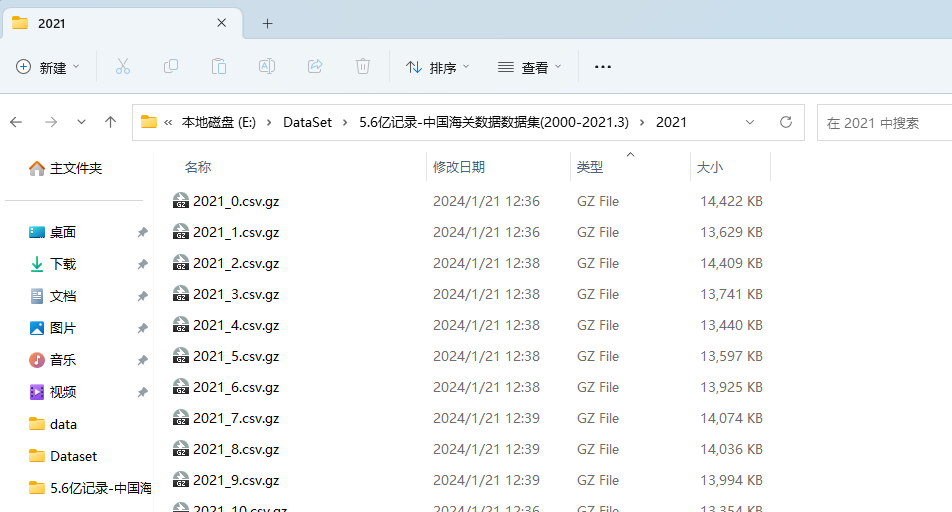
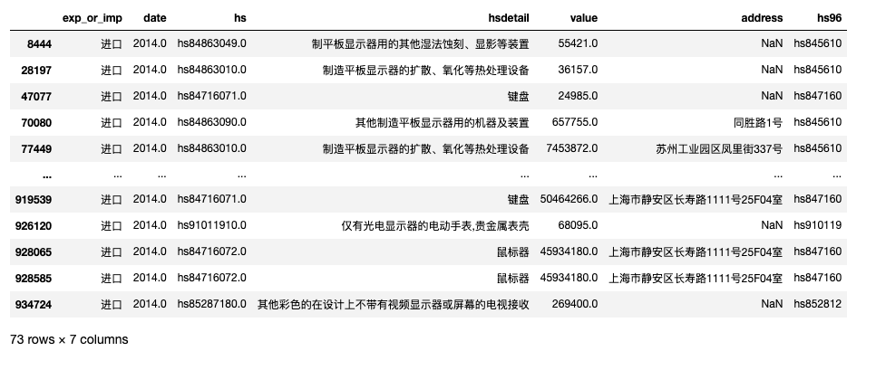

一、海关数据集
1.1 数据概况
覆盖时间: 2000 ~ 2021.3
记录条数: 562453390 (5.6亿条)
数据格式: csv文件(utf-8编码)
HS编码: 所有年份均统一为1996年HS编码(6位数)
海关数据集，300元；加微信 372335839， 备注「姓名-学校-专业」
数据是虚拟产品，一经售出，不再退还！ 请仔细阅读推文内容， 确认无误再加微信详谈购买事宜
1.2 有何不同？
目前市面上售卖的海关数据，格式未做编码统一、文件格式统一、字段统一(对齐)。 所以大概率会遇到以下问题， 如 PYTHON 读取 dta 文件乱码、 Mac 电脑打不开 mdb ， 体验下来的感觉是数据很脏，格式很乱， 老子宁可买贵买个一步到位。
注意, 大邓卖的这个数据集跟市面上数据集的信息量是一样的，区别在于大邓用了三个整天时间把数据集变的干净整洁了:
- 将 dta、mdb 等文件格式统一为编码 utf-8 的 csv 文件
- 不同年份的字段命名统一，并进行了字段对齐
- 新设字段 hs96_6， 将 2000-2021.3 中所有的商品hs编码统一为1996版的HS编码
1.3 字段含义
字段含义如下
- exp_or_imp 进口/出口
- date 日期，有的年份是year-month， 有的年份数据只有year
- hs 商品编码，不同年份采用的hs编码系统不同， 有hs1996/hs2002/2012/2017四种。
- hsdetail 商品详情
- value 货值， 默认是美元计价
- quantity 数量
- unit 计量单位
- country 起运国/目的国
- shipment 贸易方式
- port 海关
- transportation 运输方式
- routing 中转国
- company 公司
- companytype 公司性质
- address 地址
- fax 传真
- tel 电话
- zip 邮编
- email 邮箱
- contacts 联系人
- city 消费地进口/生产地出口
- hs96 商品1996年HS编码(2000-2021统一用HS96编码)
1.4 各年份字段
每个年份的所含字段不同
['2007']
exp_or_imp date hs hsdetail value quantity unit country shipment port transportation routing partyid company companytype address fax tel zip email contacts city hs96
['2000', '2001', '2002', '2003', '2004', '2005', '2006', '2008', '2009', '2010', '2011', '2012', '2013', '2014']
exp_or_imp date hs hsdetail value quantity unit country shipment port transportation routing company companytype address fax tel zip email contacts city hs96
['2014']
exp_or_imp date hs hsdetail value quantity unit country shipment transportation company hs96
['2016']
exp_or_imp date hs hsdetail value country shipment company hs96
['2017', '2018', '2019', '2020', '2021']
exp_or_imp date hs hsdetail value quantity unit country shipment currency address quantity2 unit2 hs96
二、查看数据
数据集均为 csv 格式， 按年份进行整理的数据。csv按照体量有两种
- 千万级记录的全年csv， 如 full2000.csv.gz
- 100w条记录量的小csv， 如 2000_0.csv.gz

注意 gz 解压后， 一般文件体积会放大 8 倍左右。
2.1 查看大文件
电脑内存16G以上，可以直接读取按年份存储的大csv文件(gz解压后得到csv文件)
import glob
sorted(glob.glob('*.csv.gz'))
Run
['full2000.csv.gz',
'full2001.csv.gz',
'full2002.csv.gz',
'full2003.csv.gz',
'full2004.csv.gz',
'full2005.csv.gz',
'full2006.csv.gz',
'full2007.csv.gz',
'full2008.csv.gz',
'full2009.csv.gz',
'full2010.csv.gz',
'full2011.csv.gz',
'full2012.csv.gz',
'full2013.csv.gz',
'full2014.csv.gz',
'full2015.csv.gz',
'full2016.csv.gz',
'full2017.csv.gz',
'full2018.csv.gz',
'full2019.csv.gz',
'full2020.csv.gz',
'part2021.csv.gz']
2.2 小文件
如果想了解数据，或者电脑内存较小，可以选择这种小文件(每个csv文件100w条记录)
import glob
#572个小文件
sorted(glob.glob('*/*.csv.gz'))
Run
['2000/2000_0.csv.gz',
'2000/2000_1.csv.gz',
'2000/2000_10.csv.gz',
'2000/2000_2.csv.gz',
'2000/2000_3.csv.gz',
'2000/2000_4.csv.gz',
'2000/2000_5.csv.gz',
'2000/2000_6.csv.gz',
'2000/2000_7.csv.gz',
'2000/2000_8.csv.gz',
'2000/2000_9.csv.gz',
'2001/2001_0.csv.gz',
'2001/2001_1.csv.gz',
'2001/2001_10.csv.gz',
...
...
'2020/2020_68.csv.gz',
'2020/2020_7.csv.gz',
'2020/2020_8.csv.gz',
'2020/2020_9.csv.gz',
'2021/2021_0.csv.gz',
'2021/2021_1.csv.gz',
'2021/2021_10.csv.gz',
'2021/2021_11.csv.gz',
'2021/2021_12.csv.gz',
'2021/2021_13.csv.gz',
'2021/2021_14.csv.gz',
'2021/2021_15.csv.gz',
'2021/2021_16.csv.gz',
'2021/2021_17.csv.gz',
'2021/2021_18.csv.gz',
'2021/2021_2.csv.gz',
'2021/2021_3.csv.gz',
'2021/2021_4.csv.gz',
'2021/2021_5.csv.gz',
'2021/2021_6.csv.gz',
'2021/2021_7.csv.gz',
'2021/2021_8.csv.gz',
'2021/2021_9.csv.gz']
2.3 记录数
不同年份， 记录数统计。为了提高统计速度， 每个大文件，只读取了 date 字段
import pandas as pd
import glob
# 查看每年记录数
csvfs = sorted(glob.glob('*.csv.gz'))
for csvf in csvfs:#, converters={'hs':str}
df = pd.read_csv(csvf, compression='gzip', usecols=['date'])
year = csvf.replace('.csv.gz', '').replace('full', '')
print(year, len(df))
Run
2000 10598247
2001 12682006
2002 13843463
2003 16616696
2004 19703008
2005 22819289
2006 25661754
2007 10635560
2008 11230600
2009 11341519
2010 13351580
2011 14288585
2012 15933823
2013 16662038
2014 17515154
2015 17515154
2016 17288381
2017 65783926
2018 69038499
2019 72391866
2020 68603295
2021 18668460
2.4 字段详情
数据集有几种字段体系
import pandas as pd
import glob
# 查看字段
dfs = []
csvfs = sorted(glob.glob('*.csv.gz'))
for csvf in csvfs:#, converters={'hs':str}
df = pd.read_csv(csvf, compression='gzip', nrows=1)
dfs.append(df)
fieldtext_set = set([' '.join(df.columns) for df in dfs])
fieldtext_set
Run
{'exp_or_imp date hs hsdetail value country shipment company hs96',
'exp_or_imp date hs hsdetail value quantity unit country shipment currency address quantity2 unit2 hs96',
'exp_or_imp date hs hsdetail value quantity unit country shipment port transportation routing company companytype address fax tel zip email contacts city hs96',
'exp_or_imp date hs hsdetail value quantity unit country shipment port transportation routing partyid company companytype address fax tel zip email contacts city hs96',
'exp_or_imp date hs hsdetail value quantity unit country shipment transportation company hs96'}
不同年份， 分别存储了哪些字段
for field_text in fieldtext_set:
years = []
for df in dfs:
if ' '.join(df.columns)==field_text:
year = str(df['date'].values[0])[:4]
years.append(year)
print(years)
print(field_text)
print()
Run
['2007']
exp_or_imp date hs hsdetail value quantity unit country shipment port transportation routing partyid company companytype address fax tel zip email contacts city hs96
['2014']
exp_or_imp date hs hsdetail value quantity unit country shipment transportation company hs96
['2016']
exp_or_imp date hs hsdetail value country shipment company hs96
['2017', '2018', '2019', '2020', '2021']
exp_or_imp date hs hsdetail value quantity unit country shipment currency address quantity2 unit2 hs96
['2000', '2001', '2002', '2003', '2004', '2005', '2006', '2008', '2009', '2010', '2011', '2012', '2013', '2014']
exp_or_imp date hs hsdetail value quantity unit country shipment port transportation routing company companytype address fax tel zip email contacts city hs96
三、实验代码
数据集文件的体量比较大， 使用 PYTHON 处理时，可参照如何处理远超电脑内存的csv文件 进行数据分析。
3.1 读取前 5 条记录
先读取 2014年前 5 条记录，
import pandas as pd
df2014 = pd.read_csv('full2014.csv.gz', compression='gzip', nrows=5)
#df2014 = pd.read_csv('full2014.csv', nrows=5)
df2014.head()
3.2 获取所有字段
df2014.columns
Run
Index(['exp_or_imp', 'date', 'hs', 'hsdetail', 'value', 'quantity', 'unit',
'country', 'shipment', 'port', 'transportation', 'routing', 'company',
'companytype', 'address', 'fax', 'tel', 'zip', 'email', 'contacts',
'city', 'hs96'],
dtype='object')
3.3 读取指定字段数据
为了减轻内存压力，可以选择部分字段usecols进行读取, nrows记录数参数可以同时起作用。
df2014_ = pd.read_csv('full2014.csv.gz',
usecols = ['date', 'hs', 'hsdetail', 'value', 'address', 'hs96', 'exp_or_imp'],
compression='gzip',
nrows=1000000,
)
#df2014_ = pd.read_csv('full2014.csv',
# usecols = ['date', 'hs', 'hsdetail', 'value', 'address', 'hs96', 'exp_or_imp'],
# nrows=1000000)
df2014_.head()
#记录数
len(df2014_)
1000000
3.4 含某(类) 关键词的记录
筛选出感兴趣的产品记录， 例如筛选出 2014 年 键盘、鼠标、显示器 等产品的进出口
mask1 = df2014_['hsdetail'].fillna('').str.contains('键盘|鼠标|显示器')
df2014_[mask1]
3.5 多条件筛选
筛选出 2014 年 键盘、鼠标、显示器 金额大于10000美元的进口记录 。
mask1 = df2014_['hsdetail'].fillna('').str.contains('键盘|鼠标|显示器')
mask2 = (df2014_['exp_or_imp'] == '进口')
mask3 = (df2014_['value'] > 10000)
df2014_[mask1 & mask2 & mask3]

四、数据获取
4.1 收费说明
- 海关数据集，300元；加微信 372335839， 备注「姓名-学校-专业」。
- 数据是虚拟产品，一经售出，不再退还！
- 请仔细阅读推文内容， 确认无误再加微信详谈购买事宜
4.2 样例数据
提供样例数据供大家下载检查 链接: https://pan.baidu.com/s/1nBcQ63z8n_hqdtkb84_VjA?pwd=p2gk 提取码: p2gk